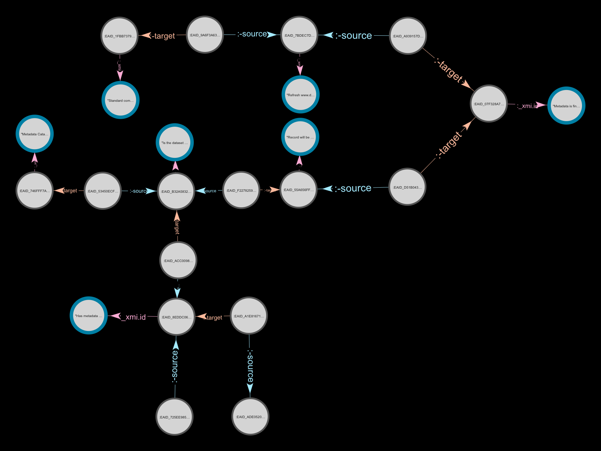

Data, linking and transform
Exploration into minimising data required and initial work into if we can transform from current Enterprise Architect files.
Exploring current data from Enterprise Architect
We were provided a number of outputs from the current Enterprise Architect system and explored what could be extracted from this, using the XML file as a base.
Detailed process maps
It was initially difficult to get a clear idea of exactly what was contained within the XML file.
However we were able to extract and model the process maps contained within the data in RDF and load and query. These seem however to be a large amount of the complexity contained within the data and clearly require a large effort to create and maintain.
The following image shows an extract from one of these process maps visualised in our
RDF
database (click to expand).

Whilst these could undoubtedly be useful, this level of detail does not seem critical to meet the stated aims of the DFM.
Removing this detail and focussing more on the metadata of the datasets and the connections between them, rather than the process, should provide a more streamlined process and whilst meeting the aims of the DFM.
Creating some dummy data
We initially attempted to create a simpler version from the XML file, however this proved to be to labour intensive so instead create some simplified dummy data. This allowed us to move more quickly and focus on the other aims. This dummy data focussed on:
- reducing complexity of model
- links between datasets
- being realistic enough to demonstrate queries
- show we should be able to answer the key questions identified with much less data
We created the data in CSV and then transformed this into RDF (see example below). The number of metadata field was limited to enough to demonstrate functionality.
This transformation could have been from any consistent data source although CSV is often used.
This data was what we then used for exploring the editor and visualisation questions.
Try it out: Convert this CSV to RDF
This produces simplified RDF (in turtle syntax) to allow it to be more human readable. In the future system these would be linked data resources, each with it's own URI.
| datasetID | datasetName | licence | ownerName | ownerID | usedBy | uses | pii |
|---|---|---|---|---|---|---|---|
| dataset1 | Dataset title 1 | http://www.nationalarchives.gov.uk/doc/open-government-licence/version/3/ | Organisation 1 | 1 | dataset2 | n | |
| dataset1 | Dataset title 1 | http://www.nationalarchives.gov.uk/doc/open-government-licence/version/3/ | Organisation 2 | 2 | dataset3 | n | |
| dataset2 | Dataset title 3 | https://choosealicense.com/licenses/apache-2.0/ | Organisation 1 | 1 | dataset1 | y | |
| dataset3 | Dataset title 4 | https://choosealicense.com/licenses/apache-2.0/ | Organisation 2 | 2 | dataset1 | dataset2 | n |
| dataset4 | Dataset title 5 | https://choosealicense.com/licenses/apache-2.0/ | Organisation 1 | 1 | y | ||
| dataset5 | Dataset title 6 | https://choosealicense.com/licenses/apache-2.0/ | Organisation 2 | 2 | dataset4 | n | |
| dataset6 | Dataset title 7 | http://www.nationalarchives.gov.uk/doc/open-government-licence/version/3/ | Organisation 1 | 1 | dataset2 | n | |
| dataset7 | Dataset title 8 | http://www.nationalarchives.gov.uk/doc/open-government-licence/version/3/ | Organisation 2 | 2 | dataset3 | n | |
| dataset8 | Dataset title 9 | https://choosealicense.com/licenses/apache-2.0/ | Organisation 1 | 1 | dataset1 | y | |
| dataset9 | Dataset title 10 | https://choosealicense.com/licenses/apache-2.0/ | Organisation 2 | 2 | dataset1 | dataset2 | n |
| dataset10 | Dataset title 11 | https://choosealicense.com/licenses/apache-2.0/ | Organisation 1 | 1 | y | ||
| dataset11 | Dataset title 12 | https://choosealicense.com/licenses/apache-2.0/ | Organisation 2 | 2 | dataset4 | n | |
| dataset12 | Dataset title 13 | http://www.nationalarchives.gov.uk/doc/open-government-licence/version/3/ | Organisation 1 | 1 | dataset2 | n | |
| dataset13 | Dataset title 14 | http://www.nationalarchives.gov.uk/doc/open-government-licence/version/3/ | Organisation 2 | 2 | dataset3 | n | |
| dataset14 | Dataset title 15 | https://choosealicense.com/licenses/apache-2.0/ | Organisation 1 | 1 | dataset1 | y | |
| dataset15 | Dataset title 16 | https://choosealicense.com/licenses/apache-2.0/ | Organisation 2 | 2 | dataset1 | dataset2 | n |
| dataset16 | Dataset title 17 | https://choosealicense.com/licenses/apache-2.0/ | Organisation 1 | 1 | y | ||
| dataset17 | Dataset title 18 | https://choosealicense.com/licenses/apache-2.0/ | Organisation 2 | 2 | dataset4 | n | |
| dataset18 | Dataset title 19 | http://www.nationalarchives.gov.uk/doc/open-government-licence/version/3/ | Organisation 1 | 1 | dataset2 | n | |
| dataset19 | Dataset title 20 | http://www.nationalarchives.gov.uk/doc/open-government-licence/version/3/ | Organisation 2 | 2 | dataset3 | n | |
| dataset20 | Dataset title 21 | https://choosealicense.com/licenses/apache-2.0/ | Organisation 1 | 1 | dataset1 | y | |
| dataset21 | Dataset title 22 | https://choosealicense.com/licenses/apache-2.0/ | Organisation 2 | 2 | dataset1 | dataset2 | n |
| dataset22 | Dataset title 23 | https://choosealicense.com/licenses/apache-2.0/ | Organisation 1 | 1 | y | ||
| dataset23 | Dataset title 24 | https://choosealicense.com/licenses/apache-2.0/ | Organisation 2 | 2 | dataset4 | n | |
| dataset24 | Dataset title 25 | http://www.nationalarchives.gov.uk/doc/open-government-licence/version/3/ | Organisation 1 | 1 | dataset2 | n | |
| dataset25 | Dataset title 26 | http://www.nationalarchives.gov.uk/doc/open-government-licence/version/3/ | Organisation 2 | 2 | dataset3 | n | |
| dataset26 | Dataset title 27 | https://choosealicense.com/licenses/apache-2.0/ | Organisation 1 | 1 | dataset1 | y | |
| dataset27 | Dataset title 28 | https://choosealicense.com/licenses/apache-2.0/ | Organisation 2 | 2 | dataset1 | dataset2 | n |
| dataset28 | Dataset title 29 | https://choosealicense.com/licenses/apache-2.0/ | Organisation 1 | 1 | y | ||
| dataset18 | Dataset title 19 | http://www.nationalarchives.gov.uk/doc/open-government-licence/version/3/ | Organisation 1 | 1 | dataset6 | n | |
| dataset19 | Dataset title 20 | http://www.nationalarchives.gov.uk/doc/open-government-licence/version/3/ | Organisation 2 | 2 | dataset8 | n | |
| dataset20 | Dataset title 21 | https://choosealicense.com/licenses/apache-2.0/ | Organisation 1 | 1 | dataset19 | y | |
| dataset21 | Dataset title 22 | https://choosealicense.com/licenses/apache-2.0/ | Organisation 2 | 2 | dataset12 | dataset22 | n |
| dataset22 | Dataset title 23 | https://choosealicense.com/licenses/apache-2.0/ | Organisation 1 | 1 | dataset21 | y | |
| dataset23 | Dataset title 24 | https://choosealicense.com/licenses/apache-2.0/ | Organisation 2 | 2 | dataset14 | n | |
| dataset24 | Dataset title 25 | http://www.nationalarchives.gov.uk/doc/open-government-licence/version/3/ | Organisation 1 | 1 | dataset21 | n | |
| dataset25 | Dataset title 26 | http://www.nationalarchives.gov.uk/doc/open-government-licence/version/3/ | Organisation 2 | 2 | dataset13 | n | |
| dataset26 | Dataset title 27 | https://choosealicense.com/licenses/apache-2.0/ | Organisation 1 | 1 | dataset9 | y | |
| dataset27 | Dataset title 28 | https://choosealicense.com/licenses/apache-2.0/ | Organisation 2 | 2 | dataset9 | dataset5 | n |
| dataset28 | Dataset title 29 | https://choosealicense.com/licenses/apache-2.0/ | Organisation 1 | 1 | y |